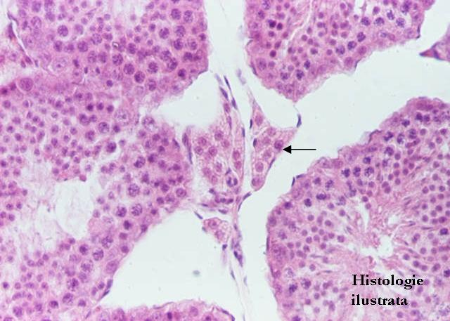

Cap.1 - Ţesutul epitelial
1.3. Ţesutul epitelial secretor
B.Ţesutul epitelial secretor endocrin (glande endocrine)



Fig. 61 - Celule endocrine organizate în mici grupuri celulare – celulele Leydig din testicul,
H.E. X 200
Fig. 62 - Celule endocrine dispuse cordonal-reticulat în insulele Langerhans din pancreasul endocrin – pancreas, H.E. X 200
Fig. 63 - Celule endocrine dispuse în cordoane arcuite şi în cordoane paralele între ele – corticosuprarenală (zona glomerulată – g. şi zona fasciculată – f.,
H.E. X 100
Fig. 64 - Celule endocrine cu organizare foliculară – tiroidă, H.E. X 100